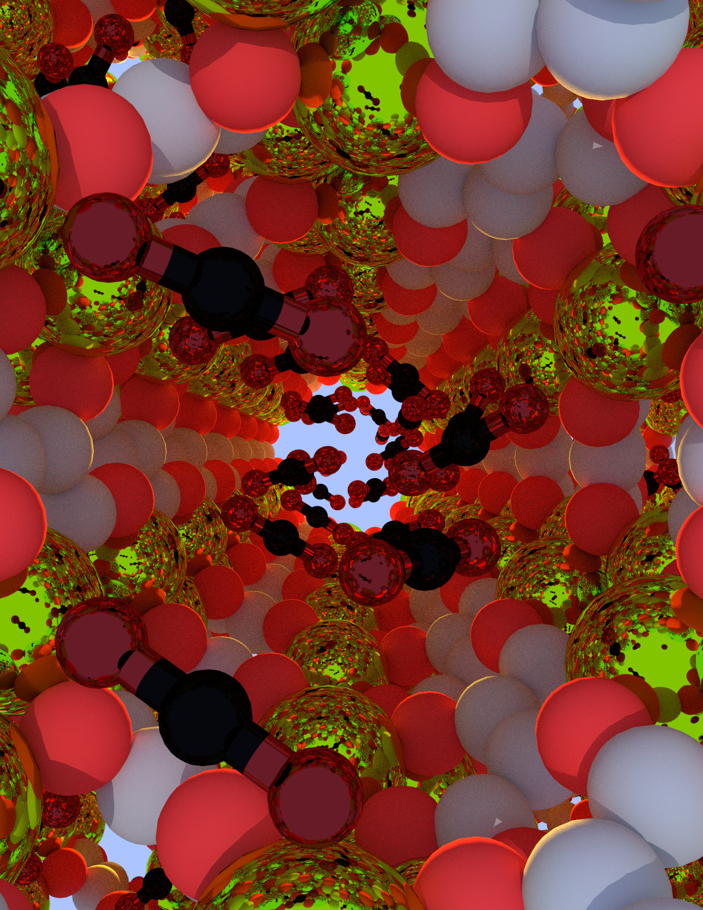

Here are a few digital art works I've created with Deepart.io:
 A celestial trot.
A celestial trot.
The squirrels of the 4 elements.
Here are a some Blender art works and scientific illustrations related to various research projects.
 Artistic rendition of a neural network extruded into the shape of a human brain.
Artistic rendition of a neural network extruded into the shape of a human brain.
Artistic rendition of the intersection of materials science and machine learning.
An artistic interpretation of DOI: 10.1021/acscentsci.7b00555, using graph theory techniques to make crystal structure predictions.
 Visualization of carbon dioxide adsorbing inside a metal-organic framework.
A piece of modern digital art.